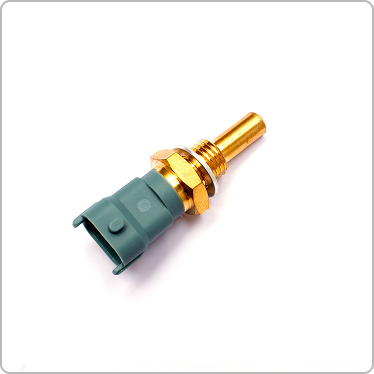

개념 학습
피지컬 컴퓨팅 시스템의 구성 요소
피지컬 컴퓨팅 시스템은 하드웨어와 소프트웨어를 이용하여 우리가 사는 세상과 상호 작용한다. 피지컬 컴퓨팅 시스템은 환경의 변화를 감지하는 입력 장치, 입력 받은 데이터를 처리하는 처리 장치, 처리 결과를 표현하는 출력 장치로 구분된다.

온도 센서
주변 온도를 측정하는 센서로 자동차 냉각수, 에어컨 등에 사용된다.
빛 센서
빛의 밝기를 감지하는 센서로 자동으로 불을 켜고 끄는 가로등에 사용된다.
가속도 센서
움직이는 속도를 감지하는 센서로, 스마트폰 흔들기 기능이나 자동차 에어백 작동에 사용된다.
마이크로컨트롤러
입력 장치로부터 받은 데이터를 처리하고, 출력 장치를 제어하는 장치이다. 자동차, 가전제품 등 다양한 전자 기기에 사용된다.
LED
처리한 데이터를
빛으로 표현하는 장치이다.
모터
처리한 데이터를
움직임으로 표현하는 장치이다.
스피커
처리한 데이터를
소리로 표현하는 장치이다.